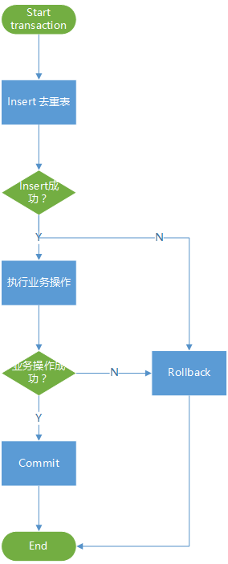

幂等性
概念
在分布式系统中，幂等性是一致性方面的一个重要概念。
幂等（idempotent、idempotence）是一个数学与计算机学概念，常见于抽象代数中。
在编程中一个幂等操作的特点是其任意多次执行所产生的影响均与一次执行的影响相同。
所谓“影响相同”，不是要求返回值完全相同，而且是指后续多余的调用对系统的数据一致性不造成破坏。对于写入类操作，如果第一次写入是成功的，后续的写入应该抛出异常或者空操作，或者执行了写入但是未对数据造成变化。对于读取类操作，需要保证其实现上是真正的读取，不能在读操作中夹带写操作。
场景
需要实现幂等性的典型场景有以下两种：
- 客户端发起的请求可能需要重试，请求的后端处理需要保证幂等
- 后端系统使用同步RPC调用或异步消息实现分布式事务，消息的消费者需要保证幂等
必要性
重试是降低系统失败率的重要手段。
广义上的RPC，包括客户端对服务端的api调用、后端系统的内网调用、跨机房调用等。一次RPC大体上包括三个步骤：发送请求、执行过程、接收响应。由于网络传输存在不确定性，导致RPC调用存在一个陷阱，即有可能出现第一、第二步都成功、第三步失败的情况，此时RPC的调用方由于接收不到结果，无法判断被调用方是否已经完成过程调用，只能按失败处理。
通常RPC调用方会针对网络失败进行重试。在上述情况下，如果远端代码不具备幂等性，却进行了重试，将导致系统的数据一致性遭到破坏，本该只执行一次的事务被执行了两次。
对于异步消息的消费者来讲，也有同样的问题。在手动ACK的情况下，消息的处理需要接收消息、处理消息、ACK三步，ACK的失败也会导致相同的问题。
在交易类的系统（比如电商、证券等）中，对非幂等的远程过程进行重试，可能会导致超买超卖，对客户造成经济损失。
互联网应用一般都是提供7*24服务的，而互联网应用本身又是快速迭代，后端系统是随时有可能需要进行发布的。发布等同于一次宕机（进程被kill），这意味着对于互联网应用的后端系统，宕机是常态而非特例。这也是幂等性和重试的必要性来源之一。
可重入性
幂等性在技术上同时要求可重入性。在分布式系统中，重试和并发都是常态，允许多次调用代码也应该支持并发调用。分布式锁（包括数据库锁）可以解决这一问题。
技术实现
本地事务的幂等性
考虑简单的增删改查四类操作：
- select，天生幂等
- insert，数据库自增主键时不具备幂等
- 基于主键update，具备幂等，但是带查询的更新除外（形如
update t set x = x + 1 where ...) - 基于主建delete，具备幂等
- 非基于主键的udpate/delete操作，需要具体问题具体分析
在分布式系统中，带条件的或带子查询的增删改操作应当慎用，除了非幂等性问题以外，还有可能带来死锁问题。
很显然，如果一个事务中所有数据库操作都是幂等操作，且不存在外部调用，那么该事务一定也是幂等的。
如果事务中存在非幂等的数据库操作，唯一键为本地事务的幂等性提供了实现基础。使用带有唯一键的去重表，在事务中先执行insert去重表，再执行其他业务操作，然后提交事务，事务过程中出现异常回滚事务，可以保证事务的幂等性。

考虑两种失败的情况。
- Insert去重表失败，事务回滚，无任何影响，调用方应停止重试
- Insert去重表成功，业务操作失败，事务回滚，之前插入的记录也将消失，无任何影响，调用方可以选择重试
以上两种失败的情况下，事务的幂等性是可以保证的。
补充说明，在使用JDBC连接MySQL的情况下，如果程序需要捕获唯一键冲突异常，可以catch com.mysql.jdbc.exceptions.jdbc4.MySQLIntegrityConstraintViolationException。
本地事务并发情况
在并发的情况下，如果两个（数据库的）客户端同时执行该事务且唯一键相同，此时唯一键能直到分布式锁的作用。
这里以示例来说明。打开两个命令行终端，连接同一个MySQL数据库，称之为A和B。
先在任意一端创建测试表1
create table tt (id int primary key);
在两端依次执行1
set autocommit = false;
在A端执行1
insert into tt (id) values (1);
返回1
Query OK, 1 row affected (0.00 sec)
在B端执行同样的insert语句1
insert into tt (id) values (1);
此时B端会挂起。
如果在A端执行1
commit;
A端会提交成功，而B端会立即结束挂起，报错，等于获取锁失败。1
ERROR 1062 (23000): Duplicate entry '1' for key 'PRIMARY'
如果A端执行1
rollback;
或直接关闭终端，B端则会立即结束挂起且insert成功，等于获取锁成功。
通过这个实验，同时也可以得出，数据库的唯一键可以用于实现通用的分布式锁。
分布式事务的幂等性
要保证分布式事务的幂等性，需要各个子事务都保证幂等性，否则整体幂等性的很难实现。
在基于关系型数据库的系统中，分布式事务最终还是要依靠数据库的本地事务来实现事务的ACID。
考虑存在A、B两个子系统分别实现各自的事务，需要整合为一个分布式事务，其中A系统的本地事务基于MySQL实现，保证幂等；B系统的本地事务也保证幂等，对外提供RPC服务接口，其具体实现这里不关心。
在这种情况下，有一个简单的不需要事务仲裁者的分布式事务方案，就是在A事务中嵌套对B的调用。具体流程是A事务先执行本地数据库操作，再调用B接口，然后提交事务。
同样，考虑三种失败的情况。
- A本地操作失败，事务回滚，无任何影响
- A本地操作成功，调用B失败，如果是唯一性冲突导致的失败，A正常提交；如果是其他失败，事务回滚，此时外部调用方可以重试
- 很极端的情况，A本地操作成功，调用B成功，事务提交失败，此时外部调用方可以重试
这个方案并不是一个高可靠的解决方案，但是实现上非常简单。
其缺陷在于如果外部调用方没有进行重试，那么可能会产生对B的多余调用。当然，如果在业务上对B的少量多余调用是可接受的，比如B是次要业务，那这个方案也是可以用的。
另外由于在DB事务中嵌套了耗时操作（RPC调用），事务的耗时也因此延长，数据库连接被事务占用不能复用，系统的吞吐量会受到影响。
分布式事务不可能实现绝对的一致性。我们应该从概率的角度思考问题，如果能将不一致的概率降到最低，比如保证幂等性加重试，再辅以业务监控和人工干预，就可以实现系统整体上较高的一致性。
幂等性设计
幂等性设计不能脱离业务来讨论。一般情况下，去重表同时也是业务数据表。对于唯一键，这里提供两种设计思路：
- 在请求参数中附带唯一标识作为唯一键，唯一标识可以由业务字段加时间戳低位拼接而成，或者使用snowflake、UUID等ID生成算法
- 找出业务本身的唯一约束。比如一个客户对同一只新股只能申购一次，那么客户号加申购代码可以组成唯一键